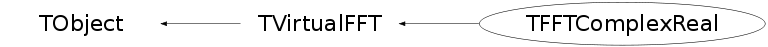

class TFFTComplexReal: public TVirtualFFT
TFFTComplexReal One of the interface classes to the FFTW package, can be used directly or via the TVirtualFFT class. Only the basic interface of FFTW is implemented. Computes the inverse of the real-to-complex transforms (class TFFTRealComplex) taking complex input (storing the non-redundant half of a logically Hermitian array) to real output (see FFTW manual for more details) How to use it: 1) Create an instance of TFFTComplexReal - this will allocate input and output arrays (unless an in-place transform is specified) 2) Run the Init() function with the desired flags and settings 3) Set the data (via SetPoints(), SetPoint() or SetPointComplex() functions) 4) Run the Transform() function 5) Get the output (via GetPoints(), GetPoint() or GetPointReal() functions) 6) Repeat steps 3)-5) as needed For a transform of the same size, but with different flags, rerun the Init() function and continue with steps 3)-5) NOTE: 1) running Init() function will overwrite the input array! Don't set any data before running the Init() function 2) FFTW computes unnormalized transform, so doing a transform followed by its inverse will lead to the original array scaled by the transform size 3) In Complex to Real transform the input array is destroyed. It cannot then be retrieved when using the Get's methods.
Function Members (Methods)
public:
| TFFTComplexReal() | |
| TFFTComplexReal(const TFFTComplexReal&) | |
| TFFTComplexReal(Int_t n, Bool_t inPlace) | |
| TFFTComplexReal(Int_t ndim, Int_t* n, Bool_t inPlace) | |
| virtual | ~TFFTComplexReal() |
| void | TObject::AbstractMethod(const char* method) const |
| virtual void | TObject::AppendPad(Option_t* option = "") |
| virtual void | TObject::Browse(TBrowser* b) |
| static TClass* | Class() |
| virtual const char* | TObject::ClassName() const |
| virtual void | TObject::Clear(Option_t* = "") |
| virtual TObject* | TObject::Clone(const char* newname = "") const |
| virtual Int_t | TObject::Compare(const TObject* obj) const |
| virtual void | TObject::Copy(TObject& object) const |
| virtual void | TObject::Delete(Option_t* option = "")MENU |
| virtual Int_t | TObject::DistancetoPrimitive(Int_t px, Int_t py) |
| virtual void | TObject::Draw(Option_t* option = "") |
| virtual void | TObject::DrawClass() constMENU |
| virtual TObject* | TObject::DrawClone(Option_t* option = "") constMENU |
| virtual void | TObject::Dump() constMENU |
| virtual void | TObject::Error(const char* method, const char* msgfmt) const |
| virtual void | TObject::Execute(const char* method, const char* params, Int_t* error = 0) |
| virtual void | TObject::Execute(TMethod* method, TObjArray* params, Int_t* error = 0) |
| virtual void | TObject::ExecuteEvent(Int_t event, Int_t px, Int_t py) |
| virtual void | TObject::Fatal(const char* method, const char* msgfmt) const |
| static TVirtualFFT* | TVirtualFFT::FFT(Int_t ndim, Int_t* n, Option_t* option) |
| virtual TObject* | TObject::FindObject(const char* name) const |
| virtual TObject* | TObject::FindObject(const TObject* obj) const |
| static TVirtualFFT* | TVirtualFFT::GetCurrentTransform() |
| static const char* | TVirtualFFT::GetDefaultFFT() |
| virtual Option_t* | TObject::GetDrawOption() const |
| static Long_t | TObject::GetDtorOnly() |
| virtual const char* | TObject::GetIconName() const |
| virtual Int_t* | GetN() const |
| virtual const char* | TObject::GetName() const |
| virtual Int_t | GetNdim() const |
| virtual char* | TObject::GetObjectInfo(Int_t px, Int_t py) const |
| static Bool_t | TObject::GetObjectStat() |
| virtual Option_t* | TObject::GetOption() const |
| virtual void | GetPointComplex(Int_t ipoint, Double_t& re, Double_t& im, Bool_t fromInput = kFALSE) const |
| virtual void | GetPointComplex(const Int_t* ipoint, Double_t& re, Double_t& im, Bool_t fromInput = kFALSE) const |
| virtual Double_t | GetPointReal(Int_t ipoint, Bool_t fromInput = kFALSE) const |
| virtual Double_t | GetPointReal(const Int_t* ipoint, Bool_t fromInput = kFALSE) const |
| virtual void | GetPoints(Double_t* data, Bool_t fromInput = kFALSE) const |
| virtual void | GetPointsComplex(Double_t* data, Bool_t fromInput = kFALSE) const |
| virtual void | GetPointsComplex(Double_t* re, Double_t* im, Bool_t fromInput = kFALSE) const |
| virtual Double_t* | GetPointsReal(Bool_t fromInput = kFALSE) const |
| virtual Int_t | GetSign() const |
| virtual Int_t | GetSize() const |
| virtual const char* | TObject::GetTitle() const |
| virtual Option_t* | GetTransformFlag() const |
| virtual Option_t* | GetType() const |
| virtual UInt_t | TObject::GetUniqueID() const |
| virtual Bool_t | TObject::HandleTimer(TTimer* timer) |
| virtual ULong_t | TObject::Hash() const |
| virtual void | TObject::Info(const char* method, const char* msgfmt) const |
| virtual Bool_t | TObject::InheritsFrom(const char* classname) const |
| virtual Bool_t | TObject::InheritsFrom(const TClass* cl) const |
| virtual void | Init(Option_t* flags, Int_t, const Int_t*) |
| virtual void | TObject::Inspect() constMENU |
| void | TObject::InvertBit(UInt_t f) |
| virtual TClass* | IsA() const |
| virtual Bool_t | TObject::IsEqual(const TObject* obj) const |
| virtual Bool_t | TObject::IsFolder() const |
| virtual Bool_t | IsInplace() const |
| Bool_t | TObject::IsOnHeap() const |
| virtual Bool_t | TObject::IsSortable() const |
| Bool_t | TObject::IsZombie() const |
| virtual void | TObject::ls(Option_t* option = "") const |
| void | TObject::MayNotUse(const char* method) const |
| virtual Bool_t | TObject::Notify() |
| void | TObject::Obsolete(const char* method, const char* asOfVers, const char* removedFromVers) const |
| static void | TObject::operator delete(void* ptr) |
| static void | TObject::operator delete(void* ptr, void* vp) |
| static void | TObject::operator delete[](void* ptr) |
| static void | TObject::operator delete[](void* ptr, void* vp) |
| void* | TObject::operator new(size_t sz) |
| void* | TObject::operator new(size_t sz, void* vp) |
| void* | TObject::operator new[](size_t sz) |
| void* | TObject::operator new[](size_t sz, void* vp) |
| TFFTComplexReal& | operator=(const TFFTComplexReal&) |
| virtual void | TObject::Paint(Option_t* option = "") |
| virtual void | TObject::Pop() |
| virtual void | TObject::Print(Option_t* option = "") const |
| virtual Int_t | TObject::Read(const char* name) |
| virtual void | TObject::RecursiveRemove(TObject* obj) |
| void | TObject::ResetBit(UInt_t f) |
| virtual void | TObject::SaveAs(const char* filename = "", Option_t* option = "") constMENU |
| virtual void | TObject::SavePrimitive(ostream& out, Option_t* option = "") |
| void | TObject::SetBit(UInt_t f) |
| void | TObject::SetBit(UInt_t f, Bool_t set) |
| static void | TVirtualFFT::SetDefaultFFT(const char* name = "") |
| virtual void | TObject::SetDrawOption(Option_t* option = "")MENU |
| static void | TObject::SetDtorOnly(void* obj) |
| static void | TObject::SetObjectStat(Bool_t stat) |
| virtual void | SetPoint(Int_t ipoint, Double_t re, Double_t im = 0) |
| virtual void | SetPoint(const Int_t* ipoint, Double_t re, Double_t im = 0) |
| virtual void | SetPointComplex(Int_t ipoint, TComplex& c) |
| virtual void | SetPoints(const Double_t* data) |
| virtual void | SetPointsComplex(const Double_t* re, const Double_t* im) |
| static void | TVirtualFFT::SetTransform(TVirtualFFT* fft) |
| virtual void | TObject::SetUniqueID(UInt_t uid) |
| virtual void | ShowMembers(TMemberInspector& insp) |
| static TVirtualFFT* | TVirtualFFT::SineCosine(Int_t ndim, Int_t* n, Int_t* r2rkind, Option_t* option) |
| virtual void | Streamer(TBuffer& b) |
| void | StreamerNVirtual(TBuffer& b) |
| virtual void | TObject::SysError(const char* method, const char* msgfmt) const |
| Bool_t | TObject::TestBit(UInt_t f) const |
| Int_t | TObject::TestBits(UInt_t f) const |
| virtual void | Transform() |
| virtual void | TObject::UseCurrentStyle() |
| virtual void | TObject::Warning(const char* method, const char* msgfmt) const |
| virtual Int_t | TObject::Write(const char* name = 0, Int_t option = 0, Int_t bufsize = 0) |
| virtual Int_t | TObject::Write(const char* name = 0, Int_t option = 0, Int_t bufsize = 0) const |
protected:
| virtual void | TObject::DoError(int level, const char* location, const char* fmt, va_list va) const |
| void | TObject::MakeZombie() |
| UInt_t | MapFlag(Option_t* flag) |
Data Members
public:
| enum TObject::EStatusBits { | kCanDelete | |
| kMustCleanup | ||
| kObjInCanvas | ||
| kIsReferenced | ||
| kHasUUID | ||
| kCannotPick | ||
| kNoContextMenu | ||
| kInvalidObject | ||
| }; | ||
| enum TObject::[unnamed] { | kIsOnHeap | |
| kNotDeleted | ||
| kZombie | ||
| kBitMask | ||
| kSingleKey | ||
| kOverwrite | ||
| kWriteDelete | ||
| }; |
protected:
| Option_t* | fFlags | transform flags |
| void* | fIn | input array |
| Int_t* | fN | transform sizes in each dimension |
| Int_t | fNdim | number of dimensions |
| void* | fOut | output array |
| void* | fPlan | fftw plan (the plan how to compute the transform) |
| Int_t | fTotalSize | total size of the transform |
| static TString | TVirtualFFT::fgDefault | default transformer |
| static TVirtualFFT* | TVirtualFFT::fgFFT | current transformer |
Class Charts
{kind=link}
{kind=link}
{kind=link}
{kind=link}

Function documentation
TFFTComplexReal(Int_t n, Bool_t inPlace)
For 1d transforms Allocates memory for the input array, and, if inPlace = kFALSE, for the output array
TFFTComplexReal(Int_t ndim, Int_t* n, Bool_t inPlace)
For ndim-dimensional transforms Second argurment contains sizes of the transform in each dimension
~TFFTComplexReal()
Destroys the data arrays and the plan. However, some plan information stays around until the root session is over, and is reused if other plans of the same size are created
void Init(Option_t* flags, Int_t , const Int_t* )
Creates the fftw-plan
NOTE: input and output arrays are overwritten during initialisation,
so don't set any points, before running this function!!!!!
Arguments sign and kind are dummy and not need to be specified
Possible flag_options:
"ES" (from "estimate") - no time in preparing the transform, but probably sub-optimal
performanc
"M" (from "measure") - some time spend in finding the optimal way to do the transform
"P" (from "patient") - more time spend in finding the optimal way to do the transform
"EX" (from "exhaustive") - the most optimal way is found
This option should be chosen depending on how many transforms of the same size and
type are going to be done. Planning is only done once, for the first transform of this
size and type.
void GetPoints(Double_t* data, Bool_t fromInput = kFALSE) const
Fills the argument array with the computed transform Works only for output (input array is destroyed in a C2R transform)
Double_t GetPointReal(Int_t ipoint, Bool_t fromInput = kFALSE) const
Returns the point #ipoint Works only for output (input array is destroyed in a C2R transform)
Double_t GetPointReal(const Int_t* ipoint, Bool_t fromInput = kFALSE) const
For multidimensional transforms. Returns the point #ipoint Works only for output (input array is destroyed in a C2R transform)
void GetPointComplex(Int_t ipoint, Double_t& re, Double_t& im, Bool_t fromInput = kFALSE) const
Works only for output (input array is destroyed in a C2R transform)
void GetPointComplex(const Int_t* ipoint, Double_t& re, Double_t& im, Bool_t fromInput = kFALSE) const
For multidimensional transforms. Returns the point #ipoint Works only for output (input array is destroyed in a C2R transform)
Double_t* GetPointsReal(Bool_t fromInput = kFALSE) const
Returns the array of computed transform Works only for output (input array is destroyed in a C2R transform)
void GetPointsComplex(Double_t* re, Double_t* im, Bool_t fromInput = kFALSE) const
Fills the argument array with the computed transform Works only for output (input array is destroyed in a C2R transform)
void GetPointsComplex(Double_t* data, Bool_t fromInput = kFALSE) const
Fills the argument array with the computed transform. Works only for output (input array is destroyed in a C2R transform)
void SetPoint(Int_t ipoint, Double_t re, Double_t im = 0)
since the input must be complex-Hermitian, if the ipoint > n/2, the according point before n/2 is set to (re, -im)
void SetPoint(const Int_t* ipoint, Double_t re, Double_t im = 0)
Set the point #ipoint. Since the input is Hermitian, only the first (roughly)half of the points have to be set.
void SetPointComplex(Int_t ipoint, TComplex& c)
since the input must be complex-Hermitian, if the ipoint > n/2, the according point before n/2 is set to (re, -im)
void SetPoints(const Double_t* data)
set all points. the values are copied. points should be ordered as follows: [re_0, im_0, re_1, im_1, ..., re_n, im_n)
void SetPointsComplex(const Double_t* re, const Double_t* im)
Set all points. The values are copied.
UInt_t MapFlag(Option_t* flag)
allowed options: "ES" - FFTW_ESTIMATE "M" - FFTW_MEASURE "P" - FFTW_PATIENT "EX" - FFTW_EXHAUSTIVE